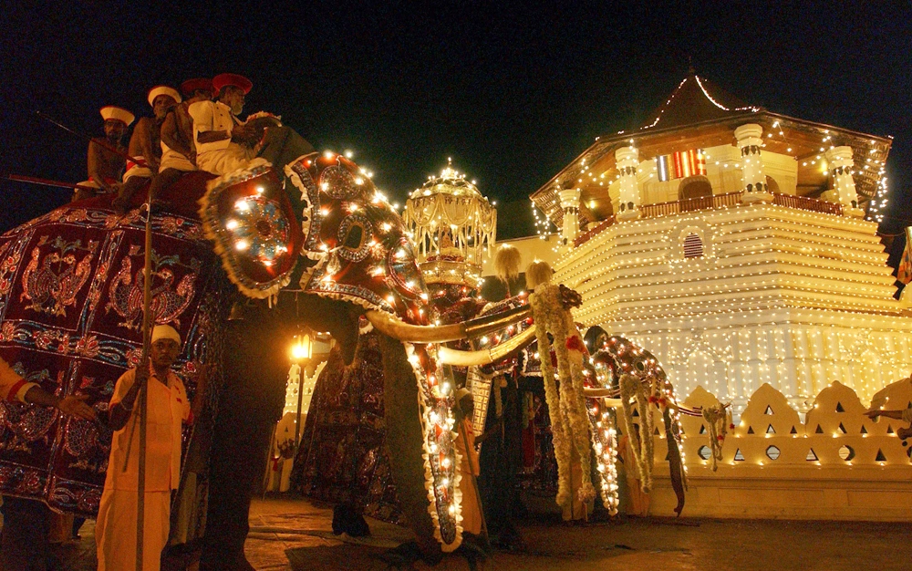
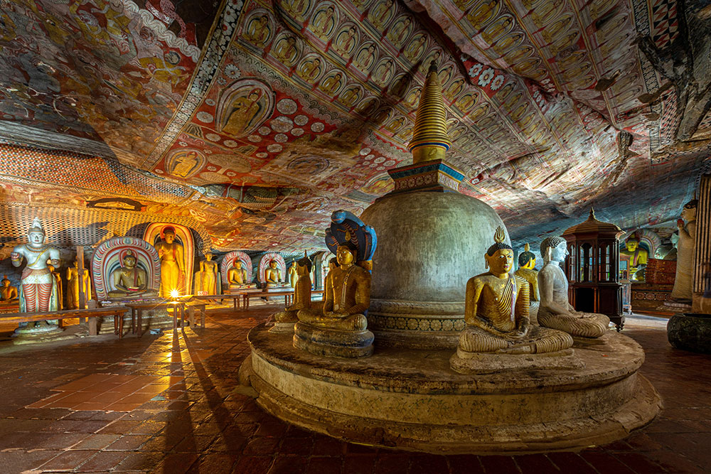
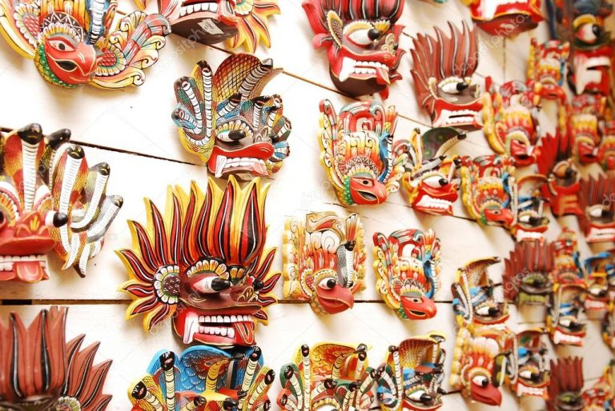
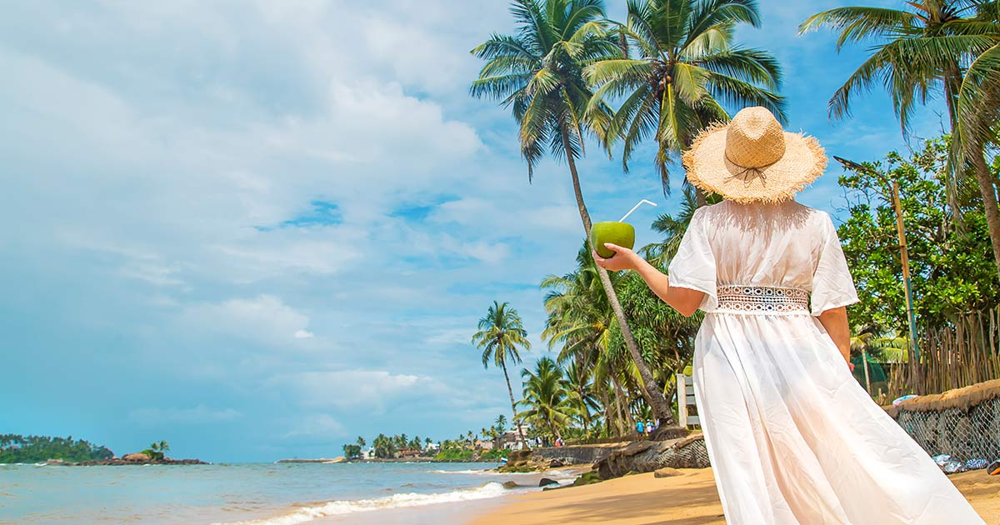

Culture
Sri Lankan culture is a rich and diverse blend of traditions, customs, and values that have been shaped by its history, geography, and multicultural influences. The country has a long history of being a crossroads of trade and cultural exchange, with influences from India, China, Europe, and other parts of Asia. Sri Lankan culture is known for its warm hospitality, strong family ties, and deep-rooted Buddhist traditions.
Traditional Sri Lankan Cuisine

Sri Lankan cuisine is a vibrant fusion of flavors, with dishes like hoppers, string hoppers, and rice and curry that showcase the country's cultural diversity. Coconut, chilies, and spices are staples that add depth and heat to the food. Popular street food includes Pittu, Kottu, and Sambal, which are often served with fresh chutneys and sambols. The cuisine is a reflection of the country's history, with influences from India, China, and Europe. Sri Lankan food is known for its bold flavors and aromas, and meals are often served with a variety of side dishes and condiments. The cuisine is a true reflection of the country's warm hospitality and generosity.
Vibrant Festivals and Celebrations
Sri Lanka celebrates numerous festivals throughout the year, each with its own unique traditions and customs. Vesak, Poson, and Esala Perahera are just a few examples of the many events that showcase the country's rich cultural heritage. These festivals bring communities together, promoting unity and joy through colorful processions, traditional dances, and music. The festivals are often marked by elaborate decorations, traditional food, and offerings to the gods. Sri Lankans take great pride in their cultural heritage, and the festivals are a testament to the country's vibrant and diverse traditions. The celebrations are a time for families and friends to come together and rejoice.
Rich Buddhist Heritage
Sri Lanka's Buddhist heritage is a significant part of the country's cultural identity, with ancient cities like Anuradhapura and Polonnaruwa showcasing the country's rich history. The sacred Temple of the Tooth in Kandy is a major pilgrimage site, and the country is home to numerous Buddhist sites, including dagabas, temples, and statues. Buddhism has shaped Sri Lankan culture, influencing art, architecture, and daily life. The country's Buddhist heritage is a source of pride for Sri Lankans, and many make pilgrimages to sacred sites throughout the year. The heritage is a testament to the country's long history and cultural significance.
Traditional Arts and Crafts
Sri Lankan traditional arts and crafts are a reflection of the country's rich cultural heritage and skilled artisans. Mask-making, batik, and wood carvings are just a few examples of the many crafts that are passed down through generations. Masks are used in traditional dances, while batik is a popular textile art form that adorns clothing and home decor. Wood carvings are used to decorate temples, homes, and furniture, showcasing the country's craftsmanship and attention to detail. The crafts are often made using traditional techniques and materials, and many artisans are renowned for their skill and creativity. The arts and crafts are an integral part of Sri Lankan culture.
Warm Hospitality and Family Ties
Sri Lankan culture is known for its warm hospitality and strong family ties, with respect for elders and community deeply ingrained. Guests are treated with generosity and respect, often being offered traditional food and drinks. Family is central to Sri Lankan life, with close-knit relationships and strong bonds between generations. Sri Lankans prioritize family and community, and social gatherings are often marked by warmth and affection. The country's warm hospitality is a reflection of its cultural values, which emphasize the importance of treating others with kindness and respect. The strong family ties are a testament to the country's social cohesion.